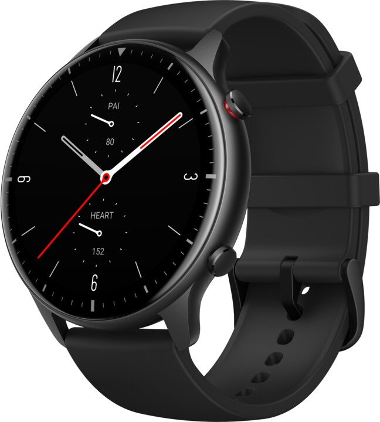
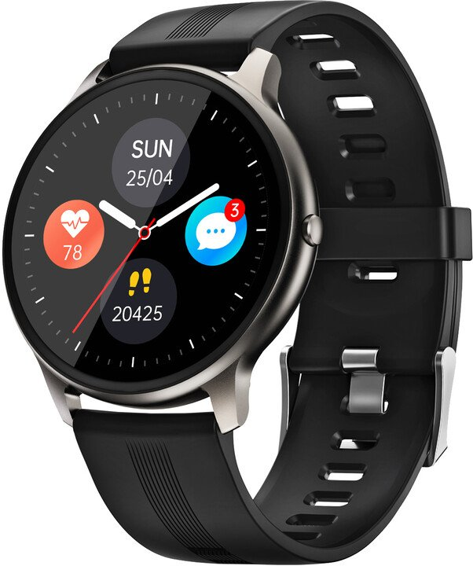
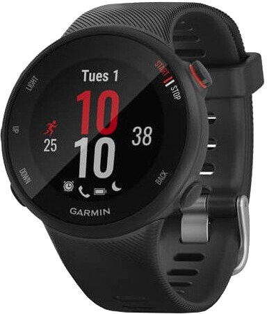
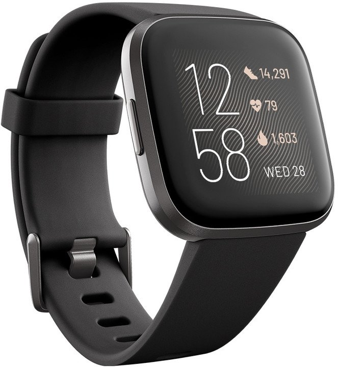

Amazfit GTR2
Stylové hodinky klasického vzhledu. Sport Edition - černý silikonový řemínek a pouzdro z nerezové oceli. 3D zakřivení rámečku. Všestranné sledování zdraví a fitness. Ukládání hudby, paměť 3 GB. Ovládání přehrávače v telefonu. 12 vestavěných sportovních režimů. 14denní výdrž baterie. Volání ze zápěstí. Možnost změny ciferníku. Voděodolnost 5 ATM. Monitor úrovně stresu. Offline hlasový asistent. Hlasové ovládání Alexa.
4 289Kč
Niceboy X-fit
Elegantní hodinky s výdrží baterie až 10 dní. Dotykový 2,5D LCD displej s velikostí 1,3 palců. Odolné kovové tělo. Plně vodotěsné a prachuodolné (stupeň krytí IP68). Mobilní aplikace pro Android a iOS. Upozorní na příchozí hovory, SMS a upozornění z dalších aplikací. 7 sportovních režimů (chůze, běh, turistika, cyklistika, basketbal, jóga, orbitrek). Široká nabídka více než 50 ciferníků.
1 990 Kč
Garmin Forerunner 45S
Kvalitní běžecké hodinky. Průměr hodinek 39 mm. Ještě nižší hmotnost - 32 gramů. Optické měření srdečního tepu přímo na zápěstí. Bezdrátová technologie Bluetooth a ANT+. Možnost propojení s chytrými telefony. Upozornění na volání a čtení SMS. Voděodolné provedení – do 5 ATM. Výdrž na jedno nabití až 1 týden. GPS, Glonass GALILEO. Akcelerometr. Upozornění na neaktivitu. Monitor spánku. Live tracking. Odhad spálených kalorií. Výpočet VO2 max.
4 990 Kč
Fitbit Versa 2
Fitbit Versa 2 jsou chytré hodinky se snímáním tepu a vestavěnou Amazon Alexou. Připojují se přes Bluetooth 4.0, dokáží se synchronizovat na 9 metrů. Lithium-polymerová baterie se nabíjí 2 hodiny a vydrží 4 dní. AMOLED displej o velikosti 1.5" x 1.5" je dotykový. Mají vibrace, Wi-Fi, senzor Sp02, NFC, vestavěný mikrofon, akcelerometr. Jsou voděodolné do 50 metrů.